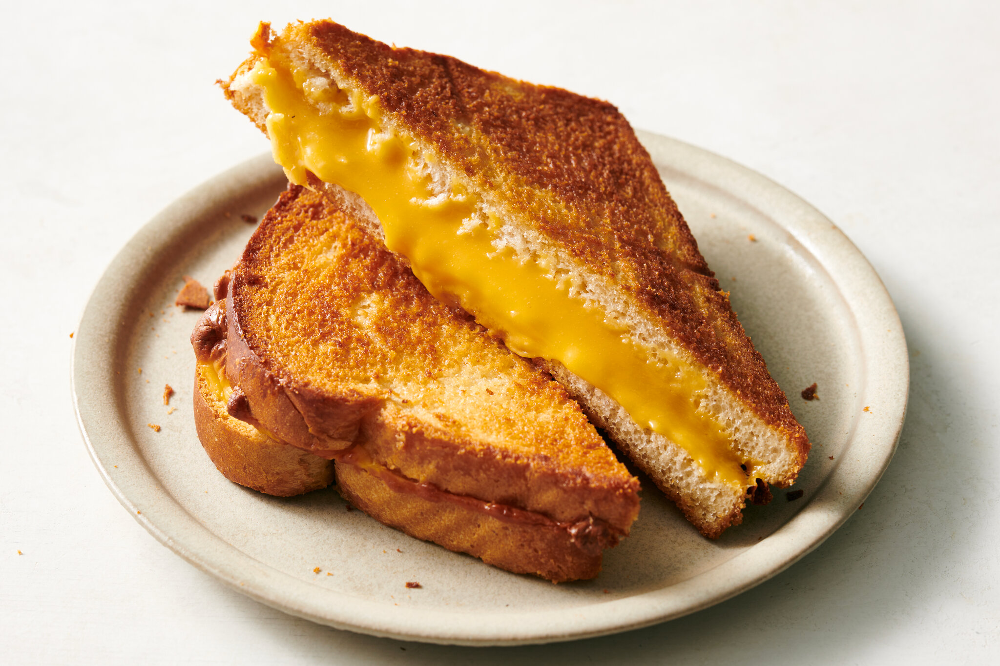

>
All Recipes
Easy Pasta

Ingredients
- 200g pasta
- 2 tablespoons olive oil
- 1 clove garlic, minced
- Salt and pepper to taste
- Fresh basil for garnish
Instructions
- Boil a pot of salted water and add the pasta. Cook according to package instructions.
- In a pan, heat the olive oil over medium heat. Add garlic and sauté until golden.
- Drain the pasta and add it to the pan. Toss with garlic and olive oil.
- Season with salt and pepper. Serve with fresh basil on top.
Grilled Sandwich

Ingredients
- 4 slices of bread
- Butter for grilling
- 2 slices of cheese
- 1 tomato, sliced
- 1/2 cucumber, sliced
- Salt and pepper to taste
Instructions
- Butter one side of each bread slice.
- Place cheese, tomato, and cucumber between two slices of bread.
- Heat a pan and grill the sandwich until golden and crispy on both sides.
- Serve hot with your favorite sauce.
Simple Omelette

Ingredients
- 2 eggs
- 1 tablespoon butter
- Salt and pepper to taste
- Optional: 1/4 cup chopped onions, tomatoes, or cheese
Instructions
- Crack the eggs into a bowl, add salt and pepper, and beat them well.
- Heat a pan over medium heat and melt the butter.
- Pour the beaten eggs into the pan, and cook for a few minutes until the eggs start to set.
- Optionally, add onions, tomatoes, or cheese on one side of the omelette.
- Fold the omelette in half and cook for another minute.
- Serve hot with toast or a salad.
Fruit Smoothie

Ingredients
- 1 banana
- 1/2 cup frozen mixed berries
- 1/2 cup yogurt
- 1/2 cup milk (or almond milk)
- 1 tablespoon honey (optional)
Instructions
- Peel the banana and cut it into chunks.
- Add the banana, frozen berries, yogurt, milk, and honey (if using) to a blender.
- Blend until smooth and creamy.
- Pour into a glass and enjoy your refreshing smoothie!